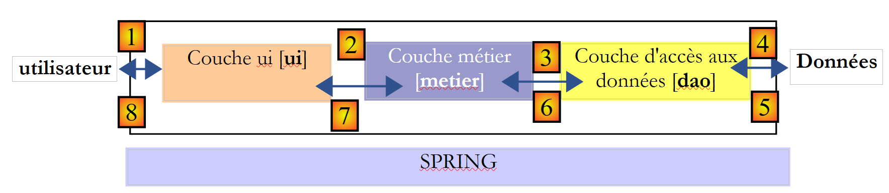
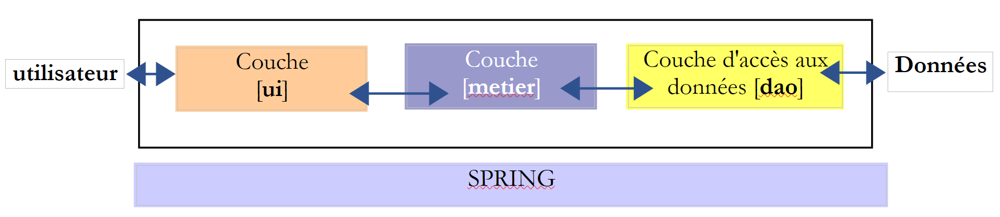

4. [TD]: Arquitecturas en capas
Palabras clave: arquitectura multicapa, Spring, inyección de dependencias.
4.1. Introducción
Recordemos lo que se ha hecho:
- en la parte 1 del ejercicio ELECTIONS no se utilizó ninguna clase. Se construyó una solución tal y como se habría construido en lenguaje C.
- En la parte 2 del ejercicio, se introdujeron dos clases:
- [ListeElectorale], que representa los atributos (id, nombre, votos, escaños, eliminado) de una lista de candidatos
- [ElectionsException], una clase de excepciones no controladas. Este tipo de excepción se utiliza cada vez que se produce un error fatal en la aplicación de las elecciones. Es una excepción no controlada, c.a.d, por lo que el desarrollador no está obligado a gestionarla con un try-catch.
El cálculo del resultado de las elecciones se ha confiado hasta ahora a un método [main] de una clase [MainElections]
La solución anterior incluye tres fases clásicas:
- la adquisición de datos, líneas 17-18
- el cálculo de la solución, líneas 19-20
- la visualización y/o el almacenamiento de los resultados, líneas 21-22
Solo la fase 2 es realmente constante. La fase 1 puede variar: los datos pueden proceder del teclado, como en los ejemplos estudiados, de un archivo de texto, de una interfaz gráfica, de una base de datos, de la red, etc. Del mismo modo, hay múltiples formas de presentar los resultados en la fase 3: mostrarlos en pantalla, como se ha hecho en los ejemplos estudiados; guardarlos en un archivo o en una base de datos; enviarlos a la red, etc.
De manera más general, una aplicación a menudo puede modelarse en tres capas, cada una con una función bien definida:
 |
A esta arquitectura también se la denomina «arquitectura de tres niveles», traducción del inglés «three-tier architecture». El término «tres niveles» suele referirse a una arquitectura en la que cada nivel se encuentra en una máquina diferente. Cuando los niveles se encuentran en una misma máquina, la arquitectura se convierte en una arquitectura de «tres capas».
- La capa [metier] es la que contiene las reglas de negocio de la aplicación. Para nuestra aplicación electoral, se trata de las reglas que permiten calcular los escaños obtenidos por las diferentes listas, una vez que se conocen los votos obtenidos por cada una de ellas. Esta capa necesita datos para funcionar. Por ejemplo, en la aplicación electoral:
- las listas, cada una con su nombre y su número de votos
- el número de escaños a cubrir
- el umbral electoral por debajo del cual se elimina una lista
En el esquema anterior, los datos pueden proceder de dos lugares:
- la capa de acceso a los datos o [dao] (DAO = Data Access Object) para los datos ya registrados en archivos o bases de datos. Este podría ser el caso aquí de los nombres de las listas, el número de escaños a cubrir y el umbral electoral. De hecho, esta información se conoce antes de la propia elección.
- la capa de interfaz con el usuario o [ui] (UI = Interfaz de usuario) para los datos introducidos por el usuario o mostrados al usuario. Este podría ser el caso aquí de los votos de las listas, que solo se conocen en el último momento, así como de la visualización de los resultados de las elecciones.
- En general, la capa [dao] se encarga del acceso a los datos persistentes (archivos, bases de datos) o no persistentes (red, sensores, etc.).
- La capa [ui], por su parte, se encarga de las interacciones con el usuario, si lo hay.
- Las tres capas son independientes gracias al uso de interfaces Java.
- Para integrar estas capas en la aplicación, existen diferentes métodos. Utilizaremos una herramienta llamada «Spring». En el esquema, esta se encuentra transversal a las demás capas.
Vamos a retomar la aplicación [Elections] desarrollada anteriormente para dotarla de una arquitectura de tres capas. Para ello, estudiaremos las capas [ui, metier, dao] una tras otra, comenzando por la capa [dao], que se encarga de los datos persistentes.
Antes, debemos definir las interfaces de las diferentes capas de la aplicación [Elections].
4.2. Las interfaces de la aplicación [Elections]
Recordemos que una interfaz define un conjunto de firmas de métodos. Las clases que implementan la interfaz dan contenido a estos métodos.
Volvamos a la arquitectura de tres capas de nuestra aplicación:
En este tipo de arquitectura, suele ser el usuario quien toma la iniciativa. Realiza una solicitud en [1] y recibe una respuesta en [8]. A esto se le denomina ciclo solicitud-respuesta. Tomemos el ejemplo del recuento de escaños obtenidos la noche de las elecciones. Este proceso requerirá varios pasos:
- la capa [ui] tendrá que solicitar al usuario el número de votos obtenidos por cada una de las listas. Para ello, deberá mostrarle los nombres de las listas en liza. El usuario solo tendrá que introducir el número de votos junto a cada lista y, a continuación, solicitar el cálculo de escaños.
- La capa [ui] no dispone de los nombres de las listas. Estos se encuentran registrados en la fuente de datos situada a la derecha del esquema. Utilizará la ruta [2, 3, 4, 5, 6, 7] para obtenerlos. La operación [2] es la solicitud de las listas, la operación [7] la respuesta a dicha solicitud. Una vez hecho esto, puede presentarlas al usuario mediante [8].
- El usuario transmitirá a la capa [ui] el número de votos obtenidos por cada una de las listas. Se trata de la operación [1] mencionada anteriormente. Durante esta etapa, el usuario solo interactúa con la capa [ui]. Es esta la que verificará, en particular, la validez de los datos introducidos. Una vez hecho esto, el usuario solicitará la lista de escaños obtenidos por cada una de las listas.
- La capa [ui] solicitará a la capa de negocio que realice el cálculo de escaños. Para ello, le transmitirá los datos que ha recibido del usuario. Se trata de la operación [2].
- La capa [metier] necesita cierta información para llevar a cabo su trabajo. Ya dispone de las listas gracias a la operación (b). También necesita el número de escaños a cubrir, así como el valor del umbral electoral. Solicitará esta información a la capa [dao] mediante la ruta [3, 4, 5, 6]. [3] es la solicitud inicial y [6] la respuesta a dicha solicitud.
- Al disponer de todos los datos que necesitaba, la capa [metier] calcula los escaños obtenidos por cada una de las listas.
- La capa [metier] puede ahora responder a la solicitud de la capa [ui] realizada en (d). Esta es la ruta [7].
- La capa [ui] formateará estos resultados para presentarlos al usuario de forma adecuada y, a continuación, los mostrará. Esta es la ruta [8].
- Es de suponer que estos resultados deben almacenarse en un archivo o en una base de datos. Esto puede hacerse de forma automática. En ese caso, tras la operación (f), la capa [metier] solicitará a la capa [dao] que guarde los resultados. Se utilizará la ruta [3, 4, 5, 6]. Esto también puede hacerse solo a petición del usuario. Se utilizará la ruta [1-8] en el ciclo de solicitud-respuesta.
En esta descripción se observa que una capa utiliza los recursos de la capa situada a su derecha, nunca los de la que está a su izquierda. Consideremos dos capas contiguas:
 |
La capa [A] realiza solicitudes a la capa [B]. En los casos más sencillos, una capa se implementa mediante una única clase. Una aplicación evoluciona con el tiempo. Así, la capa [B] puede tener diferentes clases de implementación [B1, B2, ...]. Si la capa [B] es la capa [dao], esta puede tener una primera implementación [B1] que busca datos en un archivo. Unos años más tarde, es posible que se desee almacenar los datos en una base de datos. Entonces se creará una segunda clase de implementación [B2]. Si en la aplicación inicial la capa [A] trabajaba directamente con la clase [B1], nos vemos obligados a reescribir parcialmente el código de la capa [A]. Supongamos, por ejemplo, que en la capa [A] se ha escrito algo como lo siguiente:
- línea 1: se crea una instancia de la clase [B1]
- línea 3: se solicitan datos a esta instancia
Si suponemos que la nueva clase de implementación [B2] utiliza métodos con la misma firma que los de la clase [B1], habrá que cambiar todos los [B1] por [B2]. Este es un caso muy favorable y bastante improbable si no se ha prestado atención a estas firmas de métodos. En la práctica, es frecuente que las clases [B1] y [B2] no tengan las mismas firmas de métodos y que, por lo tanto, una buena parte de la capa [A] deba reescribirse por completo.
Se puede mejorar la situación si se introduce una interfaz entre las capas [A] y [B]. Esto significa que se fijan en una interfaz las firmas de los métodos que la capa [B] presenta a la capa [A]. El esquema anterior queda entonces así:
 |
La capa [A] ya no se dirige directamente a la capa [B], sino a su interfaz [IB]. Así, en el código de la capa [A], la clase de implementación [Bi] de la capa [B] solo aparece una vez, en el momento de la implementación de la interfaz [IB]. Una vez hecho esto, es la interfaz [IB] y no su clase de implementación la que se utiliza en el código. El código anterior queda así:
- línea 1: se crea una instancia [ib] que implementa la interfaz [IB] mediante la instanciación de la clase [B1]
- línea 3: se solicitan datos a la instancia [ib]
A partir de ahora, si se sustituye la implementación [B1] de la capa [B] por una implementación [B2], y ambas implementaciones respetan la misma interfaz [IB], entonces solo se debe modificar la línea 1 de la capa [A] y ninguna otra. Se trata de una gran ventaja que, por sí sola, justifica el uso sistemático de interfaces entre dos capas.
Podemos ir aún más lejos y hacer que la capa [A] sea totalmente independiente de la capa [B]. En el código anterior, la línea 1 plantea un problema porque hace referencia directa a la clase [B1]. Lo ideal sería que la capa [A] pudiera disponer de una implementación de la interfaz [IB] sin tener que nombrar ninguna clase. Esto sería coherente con nuestro esquema anterior. Se observa que la capa [A] se dirige a la interfaz [IB] y no se entiende por qué necesitaría conocer el nombre de la clase que implementa dicha interfaz. Este detalle no es útil para la capa [A].
El framework Spring (http://www.springframework.org) permite obtener este resultado. La arquitectura anterior evoluciona de la siguiente manera:
 |
La capa transversal [Spring] permitirá a una capa obtener, mediante configuración, una referencia a la capa situada a su derecha sin necesidad de conocer el nombre de la clase de implementación de la capa. Este nombre figurará en los archivos de configuración y no en el código Java. El código Java de la capa [A] adopta entonces la siguiente forma:
- línea 1: una instancia [ib] que implementa la interfaz [IB] de la capa [B]. Esta instancia es creada por Spring a partir de la información encontrada en un archivo de configuración. Spring se encargará de crear:
- la instancia [b] que implementa la capa [B]
- la instancia [a] que implementa la capa [A]. Esta instancia se inicializará. El campo [ib] anterior recibirá como valor la referencia [b] del objeto que implementa la capa [B]
- línea 3: se solicitan datos a la instancia [ib]
Ahora vemos que la clase de implementación [B1] de la capa B no aparece en ninguna parte del código de la capa [A]. Cuando la implementación [B1] sea sustituida por una nueva implementación [B2], no cambiará nada en el código de la clase [A]. Simplemente se modificarán los archivos de configuración de Spring para instanciar [B2] en lugar de [B1].
La combinación de Spring y las interfaces Java supone una mejora decisiva para el mantenimiento de las aplicaciones, al hacer que sus capas sean independientes entre sí. Esta es la solución que utilizaremos para la aplicación [Elections].
Volvamos a la arquitectura de tres capas de nuestra aplicación:
 |
En los casos sencillos, podemos partir de la capa [metier] para descubrir las interfaces de la aplicación. Para funcionar, necesita datos:
- ya disponibles en archivos, bases de datos o a través de la red. Estos son proporcionados por la capa [dao].
- aún no disponibles. En ese caso, los proporciona la capa [ui], que los obtiene del usuario de la aplicación.
¿Qué interfaz debe ofrecer la capa [dao] a la capa [metier]? ¿Cuáles son las interacciones posibles entre estas dos capas? La capa [dao] debe proporcionar los siguientes datos a la capa [metier]:
- el número de escaños a cubrir
- el valor del umbral electoral por debajo del cual se descarta una lista
- los nombres de las listas
De hecho, esta información se conoce antes de las elecciones y, por lo tanto, puede almacenarse. En la dirección [metier] -> [dao], la capa [metier] puede solicitar a la capa [dao] que registre el resultado de las elecciones, en particular los escaños obtenidos por las diferentes listas.
Con esta información, se podría intentar una primera definición de la interfaz de la capa [dao]:
public interface IElectionsDao {
public double getSeuilElectoral();
public int getNbSiegesAPourvoir();
public ListeElectorale[] getListesElectorales();
public void setListesElectorales(ListeElectorale[] listesElectorales);
}
- línea 1: la interfaz se llama [IElectionsDao]. Define cuatro métodos:
- tres métodos para leer datos procedentes de la fuente de datos: [getSeuilElectoral, getNbSiegesAPourvoir, getListesElectorales]. Estos tres métodos permitirán a la capa [metier] obtener los datos que caracterizan la elección actual.
- un método para escribir datos en la fuente de datos: [setListesElectorales]. Este método permitirá a la capa [metier] solicitar el registro de los resultados que haya calculado.
Volvamos a la arquitectura de tres capas de nuestra aplicación:
¿Qué interfaz debe presentar la capa [metier] a la capa [ui]? Examinemos las posibles interacciones entre estas dos capas.
- La capa [ui] tendrá la función de solicitar al usuario los votos de las diferentes listas en liza. Para ello, debe conocer el número de listas. Puede solicitar esta información a la capa [metier], que a su vez puede solicitar la tabla de listas en liza a la capa [dao]. Si la capa [metier] dispone de esta tabla, es mejor transferirla a la capa [ui]. De este modo, esta última dispondrá de los nombres de las listas y podrá afinar sus mensajes al usuario solicitando, por ejemplo, «Número de votos de la lista A».
- Cuando la capa [ui] haya obtenido los votos de todas las listas, solicitará el cálculo de escaños a la capa [metier]. Esta podrá realizar dicho cálculo y devolver el resultado a la capa [ui].
- La capa [ui] podrá entonces presentar estos resultados al usuario. Este también podrá solicitar su registro.
- La capa [ui] puede, además, querer presentar información complementaria al usuario, como el umbral electoral o el número de escaños por cubrir.
Con esta información, se podría intentar una primera definición de la interfaz de la capa [metier] :
public interface IElectionsMetier {
public ListeElectorale[] getListesElectorales();
public int getNbSiegesAPourvoir();
public double getSeuilElectoral();
public void recordResultats(ListeElectorale[] listesElectorales);
public ListeElectorale[] calculerSieges(ListeElectorale[] listesElectorales);
}
- línea 1: la interfaz se llama [IElectionsMetier]. Define los siguientes métodos:
- línea 3: un método [getListesElectorales] que permitirá a la capa [ui] obtener la matriz de listas en liza;
- línea 5: el método [getNbSiegesAPourvoir] permite obtener el número de escaños a cubrir;
- línea 7: el método [getSeuilElectoral] permite obtener el umbral electoral;
- línea 11: un método [calculerSieges] (línea 36) que permitirá a la capa [ui] solicitar el cálculo de escaños una vez que se conozcan los recuentos de votos de las diferentes listas. El parámetro es la tabla de las listas en liza, sin sus escaños y sin el booleano «eliminado». El resultado devuelto es esa misma tabla, pero esta vez con los campos [sièges, elimine] inicializados;
- línea 9: un método [recordResultats] que permitirá a la capa [ui] solicitar el registro de los resultados.
Nota: debido a su posición, la capa [métier] retoma algunos de los métodos de la capa [DAO] para ofrecerlos a la capa [UI]. Debido a esta redundancia, puede resultar tentador agruparlo todo en una única capa que englobe tanto la lógica de negocio como el acceso a los datos. Esta única capa se denomina a veces el modelo, la M del acrónimo MVC (Modelo - Vista - Controlador). MVC es un patrón de diseño (design pattern) muy extendido en las aplicaciones web.
Examinemos la firma del método [calculerSieges]:
public ListeElectorale[] calculerSieges(ListeElectorale[] listesElectorales);
Anteriormente se ha escrito: «El parámetro es la matriz de las listas en liza, sin sus escaños y sin el booleano eliminado. El resultado es esa misma matriz, pero esta vez con los campos [sièges, elimine]». La firma del método también podría ser la siguiente:
public void calculerSieges(ListeElectorale[] listesElectorales);
El parámetro [listesElectorales] es una referencia de objeto, en este caso una matriz. Cada elemento es a su vez una referencia de objeto, en este caso de tipo [ListeElectorale]. El método [calculerSieges] modificará los campos [sieges, elimine] de cada uno de estos objetos. El método llamante contiene un puntero [listesElectorales] que:
- antes de la llamada, es la referencia a una matriz de objetos [ListeElectorale] cuyos campos [sieges, elimine] no están inicializados;
- después de la llamada, es la referencia (la misma) a una matriz de objetos [ListeElectorale] cuyos campos [sieges, elimine] están inicializados;
Entonces, ¿por qué utilizar la firma:
public ListeElectorale[] calculerSieges(ListeElectorale[] listesElectorales);
Al escribir una interfaz, conviene recordar que puede utilizarse en dos contextos diferentes: local y remoto. En el contexto local, el método llamante y el método llamado se ejecutan en la misma JVM (Java Virtual Machine):
Si la capa [ui] invoca el método calculerSieges de la capa [DAO], tiene una referencia al parámetro [ListeElectorale[] listesElectorales] que pasa al método.
En el contexto remoto, el método llamante y el método llamado se ejecutan en JVM diferentes:
 |
En el ejemplo anterior, la capa [ui] se ejecuta en la JVM 1 y la capa [métier] en la JVM 2 en dos máquinas diferentes. Las dos capas no se comunican directamente. Entre ellas se intercala una capa que denominaremos capa de comunicación [1]. Esta se compone de una capa de emisión [2] y una capa de recepción [3]. Por lo general, el desarrollador no tiene que escribir estas capas de comunicación. Se generan automáticamente mediante herramientas de software. La capa [metier] se escribe como si se ejecutara en la misma JVM que la capa [DAO]. Por lo tanto, no hay ninguna modificación del código.
El mecanismo de comunicación entre la capa [ui] y la capa [métier] es el siguiente:
- la capa [ui] invoca el método calculerSieges de la capa [métier] pasándole el parámetro [ListeElectorale[] listesElectorales1];
- este parámetro se pasa, de hecho, a la capa de emisión [2]. Esta transmitirá por la red el valor del parámetro listesElectorales1 y no su referencia. La forma exacta de este valor depende del protocolo de comunicación utilizado;
- la capa de recepción [3] recuperará este valor y reconstruirá a partir de él un objeto [ListeElectorale[] listesElectorales2] que es una imagen del parámetro inicial enviado por la capa [metier]. Ahora tenemos dos objetos idénticos (en cuanto al contenido) en dos JVM diferentes: listesElectorales1 y listesElectorales2.
- La capa de recepción pasará el objeto listesElectorales2 al método calculerSieges de la capa [métier], que lo persistirá en la base de datos. Tras esta operación, la referencia listesElectorales2 apunta a una matriz de objetos [ListeElectorale] cuyos campos [sieges, elimine] están inicializados. . Este no es el caso del objeto listesElectorales1 al que la capa [ui] tiene una referencia. Si queremos que la capa [ui] tenga una referencia al objeto listesElectorales2, debemos enviarle este último. Por lo tanto, debemos utilizar la siguiente firma para el método [calculerSieges]:
public ListeElectorale[] calculerSieges(ListeElectorale[] listesElectorales);
- Con esta firma, el método calculerSieges devolverá como resultado la referencia listesElectorales2. Este resultado se devuelve a la capa de recepción [3], que había llamado a la capa [métier]. Esta devolverá el valor (y no la referencia) de listesElectorales2 a la capa de emisión [2];
- la capa de emisión [2] recuperará este valor y reconstruirá a partir de él un objeto [ListeElectorale[] listesElectorales3] a partir del resultado devuelto por el método calculerSieges de la capa [métier].
- El objeto [ListeElectorale[] listesElectorales3] se devuelve al método de la capa [ui], cuya llamada al método calculerSieges de la capa [DAO] había iniciado todo este mecanismo;
En este proceso, los objetos de tipo [ListeElectorale] transitarán entre las capas [2] y [3]:
- cuando la capa [2] transmite el valor de un objeto [ListeElectorale] a la capa [3], se dice que el objeto se serializa. La forma exacta de esta serialización depende del protocolo de comunicación utilizado;
- cuando la capa [3] recupera el valor de un objeto [ListeElectorale] para volver a crear un objeto [ListeElectorale], se dice que el objeto se deserializa;
Para que un objeto pueda someterse a esta serialización/deserialización, algunos protocolos exigen que el objeto implemente la interfaz [Serializable]. Esta interfaz es solo un marcador. No hay métodos que implementar. Por lo tanto, la clase [ListeElectorale] se declarará a partir de ahora de la siguiente manera:
public abstract class ListeElectorale implements Serializable {
private static final long serialVersionUID = 1L;
- El campo de la línea 2 es obligatorio. Se puede conservar tal cual y utilizarlo para cualquier clase de tipo [Serializable].
4.3. La clase de excepción
Volvamos a la interfaz de la capa [DAO]:
 |
public interface IElectionsDao {
public double getSeuilElectoral();
public int getNbSiegesAPourvoir();
public ListeElectorale[] getListesElectorales();
public void setListesElectorales(ListeElectorale[] listesElectorales);
}
Estos métodos trabajan con una base de datos y pueden encontrar diversos errores, por ejemplo, un SGBD no disponible. Al escribir un método, siempre hay que prever los casos de error. Estos se señalan habitualmente mediante una excepción. Ya hemos visto la clase [ElectionsException] en el apartado 3.3. Seguiremos utilizándola, pero la ampliaremos de la siguiente manera:
package ...;
import java.io.Serializable;
import java.util.ArrayList;
import java.util.List;
// clase de excepción para la aplicación Elecciones
// la excepción no está marcada
public class ElectionsException extends RuntimeException implements Serializable {
// serie ID
private static final long serialVersionUID = 1L;
// campos locales
private int code;
private List<String> erreurs;
// fabricantes
public ElectionsException() {
super();
}
public ElectionsException(int code, Throwable e) {
// padre
super(e);
// local
this.code = code;
this.erreurs = getErreursForException(e);
}
public ElectionsException(int code, String message, Throwable e) {
// padre
super(message,e);
// local
this.code = code;
this.erreurs = getErreursForException(e);
}
public ElectionsException(int code, String message) {
// padre
super(message);
// local
this.code = code;
List<String> erreurs = new ArrayList<>();
erreurs.add(message);
this.erreurs = erreurs;
}
public ElectionsException(int code, List<String> erreurs) {
// padre
super();
// local
this.code = code;
this.erreurs = erreurs;
}
// lista de mensajes de error de excepción
private List<String> getErreursForException(Throwable th) {
// recuperar la lista de mensajes de error de la excepción
Throwable cause = th;
List<String> erreurs = new ArrayList<>();
while (cause != null) {
// el mensaje sólo se recupera si es !=null y no está en blanco
String message = cause.getMessage();
if (message != null) {
message = message.trim();
if (message.length() != 0) {
erreurs.add(message);
}
}
// siguiente causa
cause = cause.getCause();
}
return erreurs;
}
// getters y setters
...
}
- líneas 16-17: el tipo [ElectionsException] encapsula:
- un código de error, línea 16;
- una lista de mensajes de error, línea 17;
La clase admite cinco constructores:
- línea 20: ElectionsException()
- línea 24: ElectionsException(int código, Throwable e): el segundo parámetro es un tipo [Throwable], que es la clase padre de la clase [Exception]. Este constructor permite encapsular la excepción e con un código de error. El tipo [Throwable] (y, por lo tanto, el tipo Exception) permite encapsular una o varias excepciones. La idea es:
- interceptar (catch) una excepción que se produzca;
- enriquecerla con un mensaje encapsulándola en una nueva excepción;
- lanzar la nueva excepción;
La encapsulación tiene lugar en la línea 34 mediante la instrucción [super(message,e)]. Este proceso de encapsulación puede repetirse y la excepción inicial puede enriquecerse con diferentes mensajes. En ese caso, se dice que se tiene una pila de excepciones. El método [private List<String> getErreursForException(Throwable th)] permite obtener los diferentes mensajes asociados a las excepciones encapsuladas:
- (continuación)
- (continuación)
- la excepción encapsulada se obtiene mediante el método Throwable [Throwable].getCause();
- el mensaje asociado a una excepción se obtiene mediante el método String [Throwable].getMessage();
- (continuación)
- líneas 28-29: se construyen los campos [code, erreurs];
- línea 32: public ElectionsException(int código, String mensaje, Throwable e): este constructor es análogo al anterior, salvo que enriquece la excepción que va a encapsular con un código y un mensaje;
- línea 40: public ElectionsException(int código, String mensaje): constructor sin encapsulación de excepción;
- línea 50: public ElectionsException(int código, List<String> errores): constructor sin encapsulación de excepciones ni mensajes;
La clase [ElectionsException] se puede utilizar de la siguiente manera:
donde el mensaje estará presente o no. Una vez creada, la excepción [ElectionsException] no está destinada a encapsular nuevas excepciones. En el ejemplo anterior, encapsula la excepción e1 y las excepciones que e1 encapsula. A partir de ahí, no hay más encapsulaciones.
La clase [ElectionsException] también se puede utilizar de la siguiente manera: